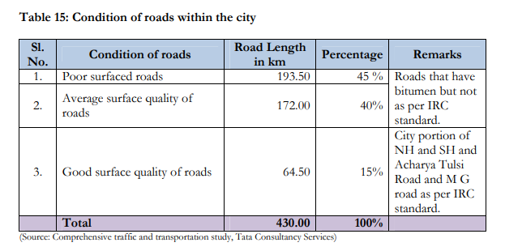

Jalgaon is called as city of gold. And it is also famous for banana. Area of Jalgaon city is 68 km^2.The district covers an area of 11,765 km². The city is located in northern Maharashtra, and serves as the administrative headquarter of the Jalgaon district. Jalgaon is nicknamed "Banana city" as the region contributes approximately two third of Maharashtra's banana production. Jalgaon city is about 225 meters above sea level. The Girna River flows through the western part of the city. It is a major business centre for tea, gold, pulses, cotton and bananas. Its production of bananas and cotton, especially by resorting to drip irrigation, has created a role model for cultivators in other parts of India. It belongs to Khandesh and Northern Maharashtra region . It belongs to Nashik Division . Jalgaon City , Yawal , Bhusawal City , Pachora are the nearby Cities to Jalgaon. There are total 15 Taluka’s or Tehsils comes under in The Jalgaon District .
Following’s are the Taluka’s comes under in The Jalgaon District :-
1) Dharangaon ,
2) Amalner ,
3) Bhadgaon ,
4) Bhusawal ,
5) Bodwad ,
6) Chalisgaon ,
7) Chopda ,
8) Erandol ,
9) Jalgaon ,
10) Jamner ,
11) Muktainagar,
12) Pachora,
13) Parola,
14) Raver,
15) Yawal.
The National Highway No.6 and State highways SH-6, SH-184 and SH-186 pass though Jalgaon City
and hence the National Highways Authority of India (NHAI) and the Public Works Department (PWD)
Government of Maharashtra are responsible for the provision and maintenance of roads within
Jalgaon City along with the Jalgaon City Municipal Corporation (JCMC). The Road Structure in Jalgaon
City does not reveal that of a planned system. Hierarchies between major and minor roads have not
been maintained in terms of ‘Rings and Radials’ and a consistent pattern of connectivity between
arterials and sub arterials need to be achieved.
i) Road Infrastructure: The available road length in Jalgaon city is 430 km (this includes the National
and State Highways within the city area) and the road density is 1.16 meter per person. The types of
roads cover the whole spectrum from unsurfaced (WBM) to bitumen surfaced and cement concrete
category. There is a variation in the degree of usage of different roads within the city. Roads such as
the ones in the Gaothan area (small lanes and by lanes) are today the least frequently used and fallinto the
category of least maintained roads in the city. The average speed on the roads is between
15 – 30 kmph and falls into the safe zone as of today. Majority of the delays are caused at
interchanges/ junctions that require improvement.
Modal Spilt: The comparison of various modes of trip making as shown in figure 1 clearly indicates
the present preference of the city for non
inhabitants still prefer the pedestrian mode.
An assessment of the quality of city roads revealed that the effective road widths are reduced due to
encroachments, absence of pedestrian sidewalks and haphazard parking, which have implications on
optimum speed and desirable safety standards.
The need to tackle present problems
maintenance free roads. A land use analysis of the roads indicated that 54% of roads are abutted by
commercial areas; 29% cater to residential establishments and the remaining 17% are spread alon
industrial and recreational centre
– motorized means of travels; primarily the city inhabitants still prefer the pedestrian mode.
An assessment of the quality of city roads revealed that the effective road widths are reduced due to encroachments, absence of pedestrian sidewalks and haphazard parking, which have implications on optimum speed and desirable safety standards.

The need to tackle present problems
maintenance free roads. A land use analysis of the roads indicated that 54% of roads are abutted by
commercial areas; 29% cater to residential establishments and the remaining 17% are spread alon
industrial and recreational centre
– motorized means of travels; primarily the city
and plan is evident with the employment of more durable and
s.
Operation and Management Issues:- Encroachment by hawkers and unauthorized parking has
reduced the effective road widths available and this problem is prevalent especially in the Central
Business Areas such as Navipeth etc. Though the road surface available is fairly good, much needs
to be done to improve the riding quality of the city roads. Pedestrian footpaths are non existent in
most parts of the city and need to be introduced to avoid mixing of vehicular and pedestrian traffic.
Roads have faulty alignments, absence of cross drainage works and railway overbridges, and lack
of road markings. Majority of the delays on roads are caused at interchanges/ junctions which
require improvement; City Development Plan-UIDSSMT City Municipal Corporation of Jalgaon .
Most of the roads are of the two lanes undivided type and pose potential safety hazards. Lack of
planned and designated bus stops/bays, particularly in the city results in interrupted traffic flow and
leads to accidents. The city does not have proper drainage system along the roads to run-off
rainwater.
Below is a news regarding remaining work of Jalgaon-Aurangabad road:
The work of widening the Aurangabad-Ajanta-Jalgaon highway in Maharashtra, which has got
affected due to the COVID-19 pandemic and the resulting manpower crunch, is likely to get over by
the end of this year, an official said . The coronavirus situation led to the delay in the work and
getting clearances from various government agencies, he said. The delay in the work of converting
the 150-km long highway into a four-lane road has impacted the tourist footfall at the world heritage
site of Ajanta. Earlier, there was an issue about contractors, then the coronavirus-induced lockdown
and then the restrictions delayed this four-laning work," the official said. Superintendent Engineer of
PWD (national highway) Prashant Auti said, "We have completed the work of 110-km long stretch of
the road so far and the work of 20 km long road would be carried out without any hurdle." "We are
facing some problems with 20-km long road as there are some land-related issues. The revenue
officials are deployed for the coronavirus duty, which is why it is a little pending," he added. The
Aurangabad Municipal Corporation should help us in removing encroachments in the project area,
he said. "We can complete the road widening work by November this year," he said, adding that the
time needed to cover the distance of 150-km road would take at least 180 minutes, which will now
be curtailed by nearly 130 minutes once the project is complete.